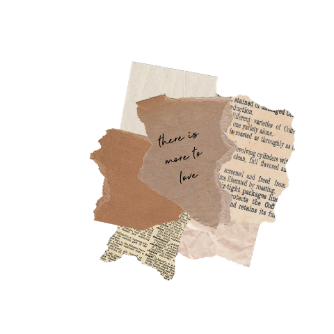
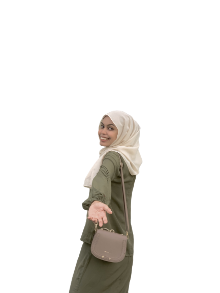
I'm Syuhada Shamsureli
Here are pieces of information about my life
Know me better and enjoy!
Here are pieces of information about my life
Know me better and enjoy!
My name is Nursyuhada Binti Shamsureli, usually called Syu in general.
Only the person closest to me would call me Adda. I was born on February 2001
which had me to be a Pisces. I did not practice and trust these astrological
horoscope in my daily life, I just loved to be called Pisces. Yet still,
I could say that I am emotionally sensitive and prefer calm envorinment.
I might be soft-hearted where I will not going to be mad for a long time as
I really hate argument. I'm usually the one that would make peace if there
is any issues among people around me.
I was raised in Semenyih, Selangor almost 2 decades and
will move to my birthplace in Kuala Kangsar, Perak in about 2 months from now.
Grow up here is teach me so many things in life. I've witnessed everything from
my lower path up until now in my maturation phase. 22 years of living brings all
the joy and misery feelings which hange me who I am now. I learnt from episodes
in my life and looking forward to treasure more in future.
I am having my last semester of Diploma in Information Management here in Rembau, Negeri Sembilan.
It was a thrilling moment when I get my UPU result since I was the first in my family member
who got into university. I'm proudly bring my family name in here with their physical and moral support
to further my studies journey. I could not believe I'm in my last semester since we've been struck by the COVID-19 pandemic.
I only get to enjoy my life in uni for only 7 month worth of one semester journey. After that,
everything turns into chaos and struggles, Online Distance Learning is a total burden to us student
physically and mentally.
However, I'm still planning to further my journey to Degree in the same course.
I am actually waiting for my Penerapan UITM results which will be announce in March.
The intense to finish my study as soon as possible to be able to live my life to the fullest
after were exxagerating.
 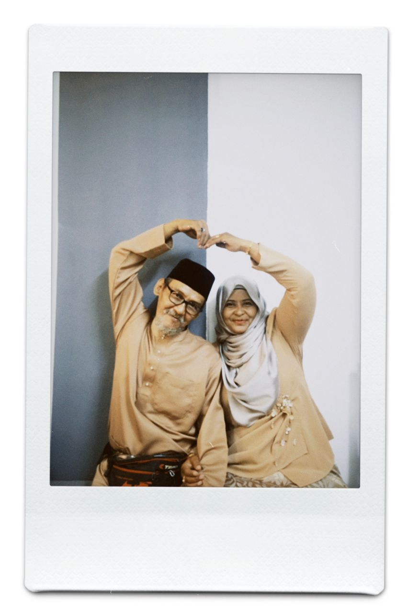
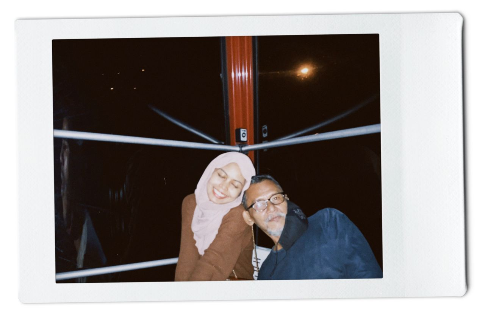
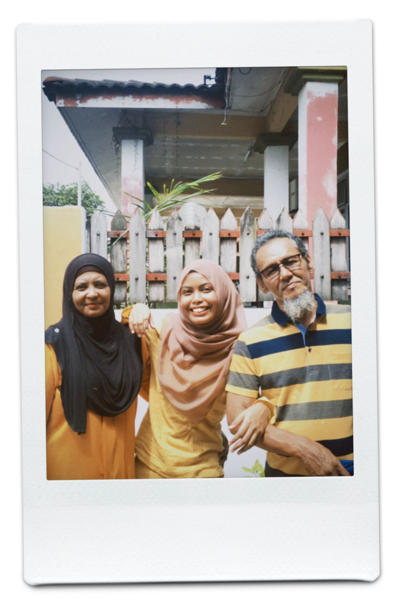
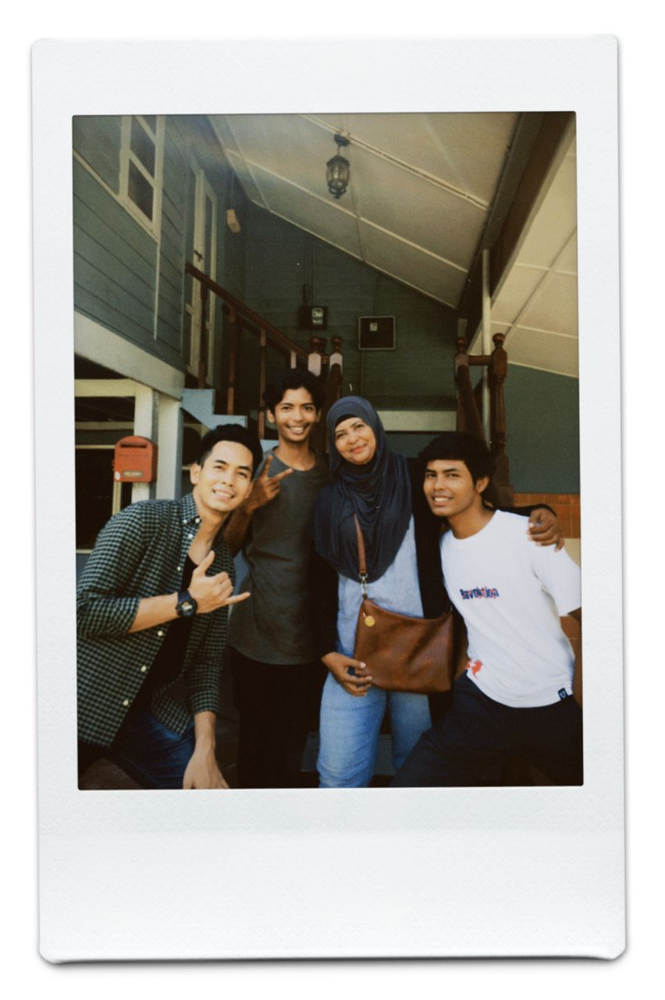
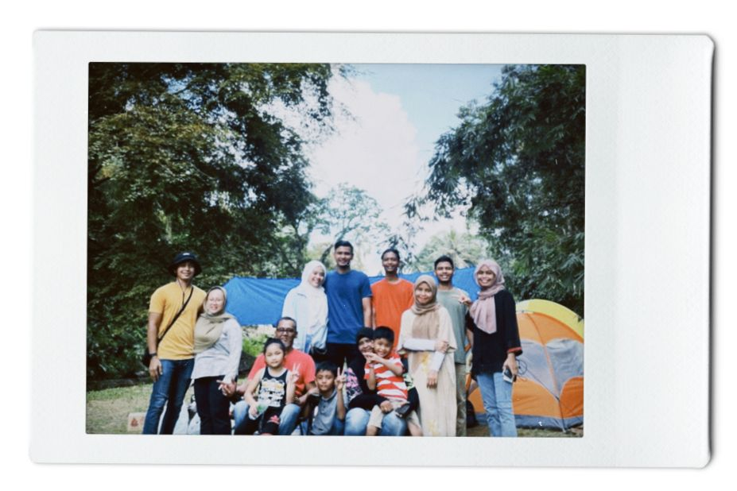
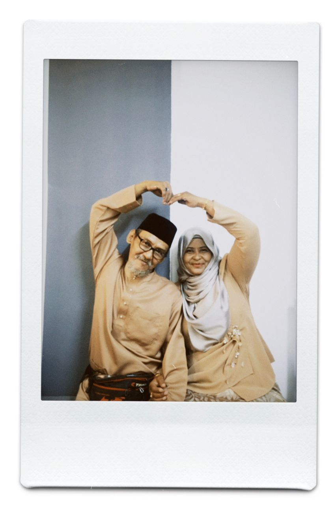
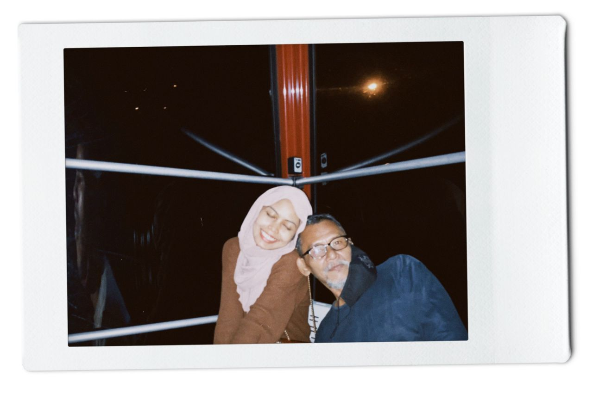
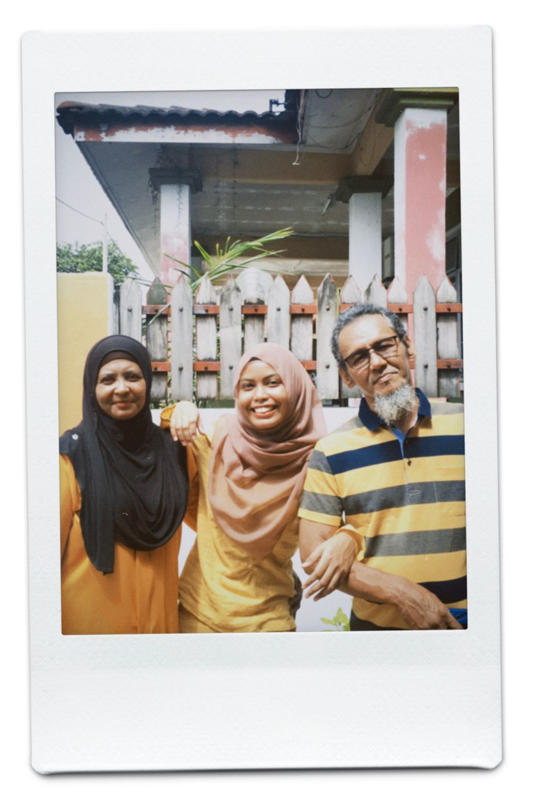
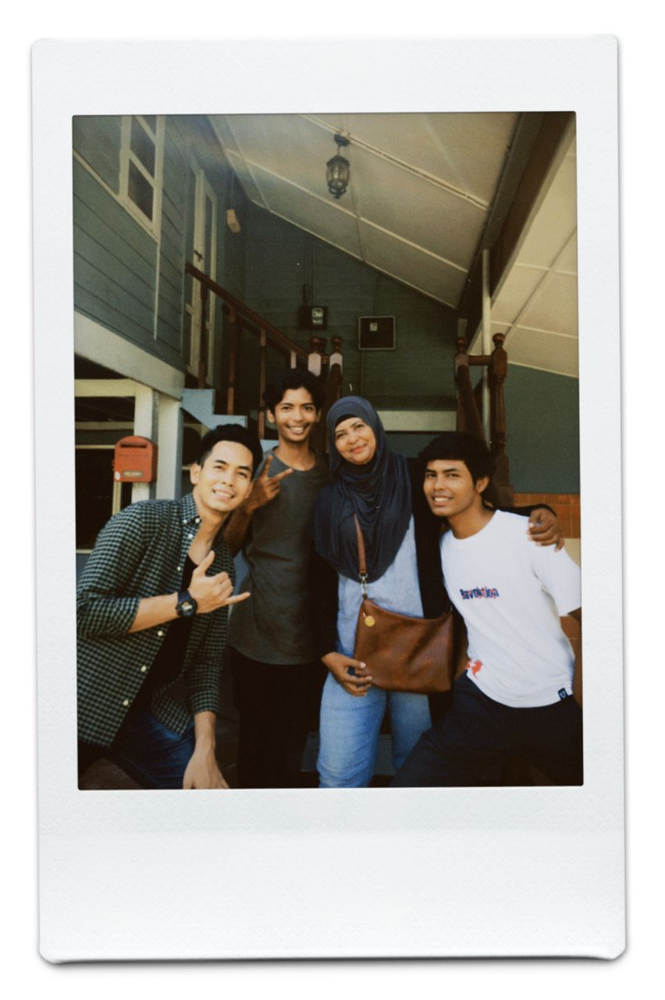
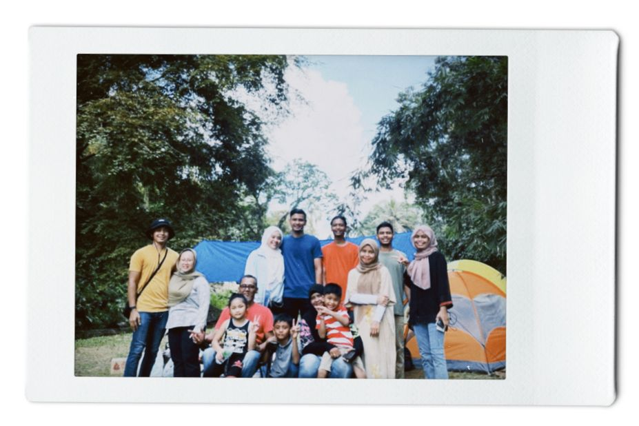
This is my small family. Living with 9 family members
are honestly were total fuss and mixed feelings.
Eventough we are having a rough time for years
but now each of us are trying to be a better person
to complete each other.
I have a 7 siblings with 5 boys and 2 girls
which one of it is me. Out of seven, I'm the fifth siblings
followed by my two younger brother. Two of my siblings
have been married which is my eldest brother already
in his 9th years of marriage and my third brother just married last year.
This is by far my closest friends, from primary school to university life. These are the one who are still having me since day one. Each of them have special spot in my heart with their presence. I appreciate each of them for staying eventough I did not gave much in our friendship. Few of them have been friend with me for a decade without having any fights or arguments. There are issues, but we solved it in a really mature ways which makes me value them the most in my life. I don't like complicate things in any relation with my life. This is my way of keeping my circle healthy, it is not only beneficial mentally but also emotionally.
He is the guy I met on early last year, starting my 2021 with him. He is not my first love, he came unexpectedly and running in my mind. I was in misery and struggling at that time, it then all blown away after he appeared, I feel like the burden has gone. He brings comfort and warm into myself that no one could give to me. He is my second home, my safest place.